Now that we have built our basic infrastructure, and we have a full pipeline, it is time for our long awaited
part where we get to speed things up. This part will consist of two subparts. In part one, this post, we implement
a CUDA backend and optimize it. We will use Nsight and NCU, two tools provided by NVIDIA, to profile our CUDA
implementation, make deductions about bottlenecks, and do fixes.
The structure of this post is as follows: We first have a brief introduction into the main architecture and how
we incorporate the CUDA backend. Because most of the CUDA implementation is straight forward I will outline how
to do most, and we will exemplify with a few kernels that are a little more interesting. We will end up with a
version of the backend that has a full CUDA backend and can be run end-to-end on the same MNIST instance we
wrapped up in the previous post. For convenience I
have made this a special release on my GitHub.
In part two we will optimize those kernels. Each optimization step is clearly marked by its headline, and we will
see profiling outputs both before and after the fix, showing how much each step actually improved on our pipeline,
and most interestingly to me personally: I give an explanation to each fix of why it actually worked.
Additionally for those who want to follow along or maybe do even better fixes I have left every optimization step
on a branch of the repository. You can find it here. I give a commit hash for every optimization step I perform below too.
In the end we will have improved our code execution on our benchmark from
2.399s down to 0.206s, a speedup with a factor of 11.6x. I note here that the initial naive CUDA version
before I started to optimize took way longer on the benchmark, a whopping 997.691s. However, here I forgot to implement
the optimizers in CUDA, resulting in unnecessary memcopies across the devices. So there is a speedup of 4800x, but
that is noise that had to be debugged, rather than optimized. Anyway, we're gonna cook the full MNIST example from 25s
training time down to 5 seconds (includes non-CUDA parts including data loading etc., parts that are not measured by the
benchmark). And on larger models with more training data the gap is only to grow. That's a good prospect I say,
so let's get started building something we can optimize.
Building a basic CUDA backend
We build our CUDA backend in two steps. At first we have to set up the basic infrastructure needed to include everything.
Following that we implement the missing kernels step by step.
Setting up a basic structure
At first we do have to include CUDA code against our project. We have to tell CMake to find CUDA and where its libraries
are. Additionally, because not everyone has a CUDA capable GPU or simply may not want to use it we give it a flag that is
enabled by default and switches off automatically if CUDA could not be found on the machine. We do so by
# CMakeLists.txt
if (CUDA)
include(CheckLanguage)
check_language(CUDA)
if(CMAKE_CUDA_COMPILER)
add_definitions(-D__CUDA)
enable_language(CUDA)
set(CMAKE_CUDA_STANDARD 20)
set(CMAKE_CUDA_STANDARD_REQUIRED ON)
else()
message(WARNING "Could not find CUDA on system. Compiling without CUDA enabled")
endif()
endif()
Note that we introduced a definition here as well through add_definitions(-D__CUDA). This will help
us identify whether CUDA has been compile time enabled, and we will use it for compile time dependent branches in code.
We have to make the CUDA headers accessible to the backend, and link CUDA against it. We are a little lazy here, so we
go a little unorthodox in CMake and simply look for all .cpp files and all .cu files and append those if desired. We do
get for the backend
file(GLOB_RECURSE CORE_SOURCES
computational_graph/*.cpp
data_modeling/*.cpp
module/*.cpp
system/*.cpp
training/*.cpp
utility/*.cpp
)
if(CMAKE_CUDA_COMPILER)
file(GLOB_RECURSE CUDA_SOURCES
computational_graph/*.cu
data_modeling/*.cu
module/*.cu
system/*.cu
training/*.cu
utility/*.cu
)
list(APPEND CORE_SOURCES ${CUDA_SOURCES})
endif()
add_library(BackendCore SHARED ${CORE_SOURCES})
target_include_directories(BackendCore PUBLIC
${CMAKE_CURRENT_SOURCE_DIR}
)
set_target_properties(BackendCore PROPERTIES
LIBRARY_OUTPUT_DIRECTORY "${PYTHON_MODULE_DIR}" # make sure Python-modules see backend
)
if(CMAKE_CUDA_COMPILER)
set_target_properties(BackendCore PROPERTIES
CUDA_SEPARABLE_COMPILATION ON
CMAKE_CUDA_ARCHITECTURES native # we can target alternative architectures here
)
find_package(CUDAToolkit REQUIRED)
target_include_directories(BackendCore PRIVATE
${CUDAToolkit_INCLUDE_DIRS}
)
target_link_libraries(BackendCore
CUDA::cudart
)
endif()
With that we now should be able to readily include our first CUDA files into our C++
backend. Remember the definition we introduced in CMake? We will now use it and include
our first kernel. The casual scalar multiplication will serve as a base example illustrating
the workflow. Our Tensor class will get the following enhancements:
What we do here is check the device of the tensor we call the operation on, and either allocate the
result on the GPU or in host RAM. A switch-case is either gonna call the CPU version or the CUDA version.
Additionally, we guard against errors with a conditional compilation, giving us meaningful output when
CUDA has been requested, but the code has not been compiled against. We will use this structure, i.e. the
switch-case with the error output in virtually every operation where we intend to branch off into CUDA code.
We also have to store the CUDA kernels somewhere. In the example we did a conditional include that only
uses the CUDA headers when the compile time flag has been enabled. For ease of architecture we write kernels
exactly where they belong. That is, respective CUDA kernels are in a directory named cuda in the same directory
where the CPU version resides in. CUDA kernels that can be shared by multiple modules of the backend are in
a folder with path src/backend/shared/cuda. Therefore the directory structure looks like the following now:
Note that I only show directories in the tree above. An exception to the rule is the cuda folder in
utility, but I'd wager this also contains what you'd expect it to contain. Mainly some wrappers
for better error messaging and some generic functions checking device capability. With that we can now
bring CUDA alive in our backend.
CUDA memory management and custom kernels
As previously mentioned, we don't really have to work out every kernel for this blogpost. For us now
it is mostly important to look at the main points, and point out some kernels that are of more interest
to us. The previous section introduced the basic pattern we will apply through our CUDA implementations.
But it did not show yet how we get CUDA tensors in the first place. Given our preliminary thoughts in part 1
of this series, this is rather a plug-and-play operation. There, we came up with a tensorValues_t struct,
whose purpose was to manage the underlying data of the tensors. We gave it a resize operation that every
tensor constructor called, and malloc'ed memory in there. All we have to do now is to give it the device and
call cudaMalloc instead, as in
After this we also have to make sure that we update the constructor of tensorValues_t accordingly, as well as
all the copy operations and set-device operations. The latter has two ways: If we are on the GPU and we move to
the CPU we have to malloc, copy from the device to the host, and free memory on the GPU. If we start out on the
CPU and move to the GPU we have to go the other way. No surprises there essentially. Lastly we update our getters
and setters of the tensorValues_t to fetch elements from either the CPU or the GPU. And that already concludes our
memory management.
Because we designed our frontend with this in mind, we do not have to update the Python binding and can
simply instantiate a tensor now, telling it that it is a GPU resident as in t = Tensor.ones([2, 2], Device.CUDA),
and we will have a tensor that lives on the GPU.
Adding a few kernels is just what you think it is. In the previous section we took a look at how CUDA kernels are called
through a switch-case statement, here is the CUDA implementation of the kernel we showed there:
// src/backend/data_modeling/cuda/tensor_ops.cuh
#ifndef __CUDA
static_assert(false, "File should not be included without CUDA enabled"); // for safety reasons
#endif // __CUDA
// includes here...
class Tensor;
namespace cuda_impl {
void scalarmul(Tensor& res, const Tensor& src, ftype scalar);
}
// src/backend/data_modeling/cuda/tensor_ops.cu
namespace { // anonymous namespace for all non-shared CUDA kernels in this project
__global__ void scalarmulKernel(ftype* const res, const ftype* const left, ftype scalar, tensorSize_t size) {
int gid = blockDim.x * blockIdx.x + threadIdx.x;
if(gid >= size)
return;
res[gid] = left[gid] * scalar;
}
}
namespace cuda_impl {
void scalarmul(Tensor& res, const Tensor& src, ftype scalar) {
constexpr int threadsPerBlock = 256;
const int blocksPerGrid = (src.getSize() + threadsPerBlock - 1) / threadsPerBlock;
scalarmulKernel<<<blocksPerGrid, threadsPerBlock>>>(res.getData(), src.getData(), scalar, src.getSize());
cudaErrchk(cudaDeviceSynchronize());
}
}
We have this modular design for clean code reasons, but also just because CUDA demands it. Essentially,
when implementing CUDA kernels we have to use .cu file endings, to signal NVCC that it's time for it to shine.
We could now either rename all our .cpp files to .cu, which would force every user to have a CUDA toolchain on
their machine, or we do what I did here: Have separate .cu files with conditional compilation, and we cleanly
separate CUDA code from pure C++ code. I note here that cudaMalloc and other utility functions given by CUDA
are pure C++ code included through #include "cuda_runtime.h" and can reside in .cpp files.
Illustration of how the conditional include header separates CUDA code from C++ code, enabling
separation between the C++ and the CUDA toolchains.
Illustration of how the conditional include header separates CUDA code from C++ code, enabling
separation between the C++ and the CUDA toolchains.
I also note here that the custom kernel we just implemented above is what CUDA engineers like to call
"embarrassingly parallel". In other words, pretty trivial to implement functionally. Most of the kernels
introduced in this new version follow this pattern, making for a quick win. A few exceptions however stand
out, and I will present them as an optional section below. However, one thing I want to note is that the kernels have
not been written all too terrible to start with. For instance, I used hardware intrinsics when possible.
For instance, inside the sigmoid kernel we compute a single element using this kernel:
// src/backend/shared/cuda/common_kernels.cuh
namespace cuda_impl { // in cuda_impl because it is shared
template<typename T>
__device__ __forceinline__ ftype cudaSigmoid(const ftype x) {
if constexpr (std::is_same_v<T, float>) {
ftype z = expf(-fabsf(x));
ftype s = 1.0f / (1.0f + z);
return (x >= 0.f) ? s : z * s; // x < 0 => e^x/(e^x+1)
}
else if constexpr (std::is_same_v<T, double>) {
ftype z = exp(-abs(x));
ftype s = 1.0 / (1.0 + z);
return (x >= 0.0) ? s : z * s; // x < 0 => e^x/(e^x+1)
}
else {
static_assert(always_false<T>, "Unexpected value for ftype encountered");
}
}
}
The kernel lives in shared because it is used both in the forward pass and in the backward pass.
A forced inline ensures that we do not call kernels from within a kernel, and a templated overload
distinguishes whether to use single-precision-specific instructions (expf, fabsf) or generic instructions
(exp, abs). The generic instructions take both single- and double-precision values, but we can play
with other functions exposed through the CUDA API. While I did not verify this myself at this point, we can later revisit this
and play with these functions to squeeze out performance. In theory we would expect the expf to be faster
though, since it is explicitly designed for single-precision floating-point numbers. In general for floating
points there is a trade-off between accuracy and speed. The larger our representation, the better our results,
but the slower the computation itself. NVIDIA provides intrinsics for this that reduce the number of operations
even further, at the cost of precision.
Optional: A brief history of floating points
This optional is a brief historical breakdown of floating point numbers and how they evolved over time. A short
disclaimer: This is obviously for the younger generation of engineers, including spoiled millennials like me, and
I have not personally lived through all those events I describe in the following. It is based on my personal
research through the wild west the internet has become, and could be wrong. I am confident the information is
correct, but if you find something wrong, please let me know.
Essentially, when representing numbers we distinguish, roughly, two kinds of number representations: integer
values and floating point numbers (FPs). Normally we learn the integer representation first, since that is the
easier one - binary representation, conversion between decimal, octal, hexadecimal, and binary format, addition
and subtraction in the respective number systems, and signed representation, nowadays the 2's complement (enabling
us to push both addition and subtraction through an adder, hence saving silicon). Pretty straight forward once you
get the idea.
FPs on the other hand are not that easy. I myself have never had an introduction into actual circuitry doing
basic arithmetic on FPs, and the reason is that even basic operations get much more complicated than on integer
values. On top of that, floating points come with a much larger set of operations we want to perform on them.
Integers are normally constrained to addition and multiplication plus their inverse, unless you want to do something
more fancy. Floating points, on the other hand, add trigonometric functions (sine, cosine, tangent), root operations
such as the square root, exponentials, logarithms, and any other hip operation you can come up with. This makes it
inherently harder to find a single representation that works well across all these operations, and for all intended
purposes.
The result was that in the beginning of computing (relative to our modern standpoint that is) vendors had different
ways to represent floats, mostly disagreeing on how many bits to use for representation and how to distribute them
(see figure below). Intel CPUs did it differently than IBM, which did it differently than Seymour Cray, etc., leading
to problems such as incompatibilities between hardware of different vendors, different user-facing results on each
system, and each representation having its own set of quirks. To tackle the challenge Intel brought in Canadian
mathematician William Kahan, and secretly
they began working on an 'ultimate FP representation'.
At the same time, the IEEE called for a unified standard, and Intel allowed Kahan to submit his work, which led to what
is now called the IEEE-754 standard. It is a
standard that generally puts up the scaffolding for how FPs are computed nowadays, which is why if you work on code that
is a little closer to hardware, you've probably seen the name many times already. It starts out with how to represent
numbers - see the figure below. In addition, it also provides rules for how to round, how to control rounding errors,
and exception handling. The two special FP types you have probably seen already, NaN and Infinity, have their root in
this standard. The standard also defines a positive and negative zero FP representation, indicating whether we
approached zero from the positive or the negative side.
Floating point representations and distribution of bits according to IEEE-754. The 128-bit representation
got added later.
Floating point representations and distribution of bits according to IEEE-754. The 128-bit representation
got added later.
Intel on its side developed the Intel 8087 math co-processor in 1980, 5 years before IEEE-754 officially launched. The
centerpiece of it was the x87 architecture, which uses a stack-based register file. Kahan determined that an 80-bit
representation of floating-point numbers is enough to remove numerical errors that arise from chaining floating point
operations, which is why x86-64 processors still support 80-bit wide FP operations today. However, while mathematically
sound, 80-bit sits awkwardly in a computer, since it is not a natural power of two. Computers, however, tend to fetch
from addresses aligned to a power of two, resulting in alignment problems outside of the floating point unit. Modern
computers that need genuine higher precision than 80 bits bank on the fact that hardware got a whole lot more efficient
than it used to be back in the day, and moved directly up to 128-bit. Practically it also turned out that for most of us
32-bit and in some cases 64-bit are more than sufficient, making the 80-bit format obsolete today. Intel used later
capability upgrades of its processors, starting with SSE and cemented by SSE2, to softly phase out the x87 FP unit,
which it still carries only for backward compatibility reasons.
However, the story of floating point numbers does not end here. For decades this has worked just fine. Whoever follows recent
developments, however, will have noticed that we all of a sudden encountered a new wave of floating point representations.
For instance, the C++ standard just got enhanced with a few new
FP types.
Most are not a surprise, but looking closer we find an std::bfloat16_t type. CUDA supports a range of
smaller types, mainly FP4, FP6, and FP8, along with
the brainfloat type that C++ also has. But how come?
The answer lies in the rise of modern LLMs. Researchers found that for large models shorter representations are enough to still yield
good results, leading to the notion of quantization. Here, smaller data types have been used to perform the floating point operations in LLMs, reaching good
results with higher compute throughput and cutting the memory footprint. Google's brainfloat (BFloat) takes this idea a step further.
Given that precision (the mantissa) matters less, but the exponent range needed in LLMs can be wide, this data type shifts the bit
budget accordingly. For instance, the IEEE-754 half-precision (FP16) format assigns 10 bits to the mantissa and 5 bits to the exponent
(plus 1 sign bit). BFloat16 keeps the sign bit but instead spends 8 bits on the exponent and 7 on the mantissa, reducing the mantissa
by three bits and increasing the exponent by the same number. These are, however, very recent developments and can change in the
future, so it's worth keeping an eye out.
Other optimizations consistently included in our first wiring up of CUDA are classic warp-level reductions by defining a
volatile pointer to the beginning of the array, and then scan through the array based on thread-id, see below (we will switch
to modern warp shuffle instructions in an optimization step down below). I also used
shared memory where applicable, and bit-shifts for divisions by 2, which happens pretty much all the time for parallel
reduction kernels.
To the astute reader wanting to see optimization, arguably the more interesting part of this blogpost,
I recommend to skip the next optional sections, covering two example kernels that were not that trivial,
and that show my train of thought when I implemented the initial design. For those who are interested in
seeing more what we will be dealing with before we optimize, the optional parts are for you.
Optional: The first naive matmul kernel
The first kernel we take a look at is the one we will be spending most of our time on optimizing, the infamous
$\mathcal{O}(N^3)$ matmul kernel, object of interest of any linear transformation in geometry and linear algebra
as a whole.
Because incoming tensors can be of arbitrary dimensions, I still stick to my own guns and only
allow matmul on the last two dimensions. I.e. both in the C++ backend as well as in CUDA the basic
assumption is that the matrix multiplication happens over two kernels with arbitrary dimensions, but
the last two are the individual matrix sizes, as in (dim_1, dim_2, ..., n_rows, n_cols). The reason
is basically because that saves me from a further abstraction level of indexing hell we already have
anyway. But it also makes sense on an architectural level, because with this assumption we do have better
memory access patterns than when spreading the matmul over non-aligned memory addresses.
As for the kernel, since I virtually already split the tensor down to its individual matrices, I can now
use a simple 2D-matmul kernel that does the trick.
Anyone who understands CUDA can already see a few openings for optimization, but we will get
back to this later in this post.
Optional: Softmax kernel
The second kernel that I think is worth looking at is the softmax kernel (the forward version - the backward
version largely mirrors this one for obvious reasons). Optimization of this kernel won't be part of this
blogpost, so you will not see this one again, unless I expand on this series at a later point in time.
It is interesting however because it shows pretty much any optimization pattern I chose to use in the first
naive implementation. In my eyes it is still a very naive implementation, but perhaps it's not that naive
after all. Anyway, once again I start with setting up the basic kernel calls. I start with the first out of
the three options I employ here:
// src/backend/module/activation_functions/cuda/activations.cu
namespace cuda_impl {
/**
* @brief Does the softmax computation. Warning: Current implementation can only handle a stride of
* at max 512 * 512 = 262144 floating point numbers. If number exceeds this an exception is thrown.
*
* For simplicity and for reasons of CUDA efficiency this function is split into 3 segments.
* 1. stride <= 32 -> we use warp level.
* 2. stride > 32 && stride < 512 -> we can fit one stride into one block.
* 3. stride > 512 -> we have to use two-stage kernel cascading for parallel reduction.
*/
void softmax(Tensor& res, const Tensor& in) {
const tensorSize_t stride = static_cast<tensorSize_t>(in.getDims().get(-1));
const int nStrides = in.getSize() / stride;
// TODO: use some static struct here to prevent this guy from keeping on re-allocating memory
ftype* maxValues;
cudaErrchk(cudaMalloc(&maxValues, nStrides * sizeof(ftype)));
constexpr int warpSize = 32;
if(stride <= warpSize) {
assert(DeviceProperties::getWarpSize() == 32);
// each warp does one stride
constexpr int threadsPerBlock = 256;
constexpr int warpsPerBlock = threadsPerBlock / 32;
const int blocks = (nStrides + warpsPerBlock - 1) / warpsPerBlock;
//cout << "nStrides " << nStrides << " - in " << in << endl;
if(stride <= 2) {
findMaxKernelOneWarp<1> <<<blocks, threadsPerBlock, threadsPerBlock * sizeof(ftype)>>>(maxValues, in.getData(), stride, nStrides);
}
// ... same for stride == 4, 8, and 16
else if(stride <= 32) {
findMaxKernelOneWarp<16> <<<blocks, threadsPerBlock, threadsPerBlock * sizeof(ftype)>>>(maxValues, in.getData(), stride, nStrides);
}
cudaErrchk(cudaDeviceSynchronize());
if(stride <= 2) {
stableSoftmaxKernelOneWarp<ftype, 1> <<<blocks, threadsPerBlock, threadsPerBlock * sizeof(ftype)>>>
(res.getData(), in.getData(), maxValues, stride, in.getSize());
}
// ... same for stride == 4, 8, and 16
else if(stride <= 32) {
stableSoftmaxKernelOneWarp<ftype, 16> <<<blocks, threadsPerBlock, threadsPerBlock * sizeof(ftype)>>>
(res.getData(), in.getData(), maxValues, stride, in.getSize());
}
cudaErrchk(cudaDeviceSynchronize());
}
else {
// ... comes after the explanation of the block above
}
cudaErrchk(cudaFree(maxValues));
}
}
The softmax kernel consists of two subsequent parallel reductions. In part 2b I have shown in an optional section that softmax suffers from numerical instability
due to the exponential functions it employs. To tackle that one can first find the maximum value, over which we
normalize both numerator and denominator of a fraction, a standard math trick looking generically like
$$\frac{e^x}{e^y} = \frac{e^x}{e^y} \cdot 1 = \frac{e^x}{e^y} \cdot \frac{e^{-a}}{e^{-a}} = \frac{e^{x-a}}{e^{y-a}}$$
The steps of a softmax are then
Find the maximum exponent $x_{max} = \max_i x_i$ and subtract it from each exponent - $\hat{x}_i = x_i - x_{max}$.
Compute the normalizing denominator $s=\sum_i e^{\hat{x}_i}$.
Compute the softmax distribution according to $softmax(x_i)=\frac{e^{\hat{x}_i}}{s}$.
I might have overblown the initial softmax kernel a bit like this, since that was work of 3-4 mornings considering
all the debugging I also put into it, but it was a nice one to practice and deepen my CUDA skills for me. So I went
the hard way and split it into three distinct parts, depending on how large the distribution we softmax over was:
Distribution fits in a warp - $|x| \leq 32$.
Distribution larger than warp but fits in a block - $|x| \leq \text{blockSize}$.
Distribution larger than a block - $|x| > \text{blockSize}$.
This is the first part. The two kernels are obviously templated, and I think it is better to show them to you
directly to answer why the templates:
// src/backend/shared/cuda/common_softmax.cuh
namespace cuda_impl {
template<int maxoffset>
__forceinline__ __device__ void warpMaxReduce(volatile ftype* const input, const tensorSize_t stride, const int offset) {
static_assert(maxoffset > 0 && maxoffset <= 32, "Invalid value for template");
if(maxoffset == 32) {
if(offset + 32 < stride) input[offset] = cudaMax<ftype>(input[offset], input[offset + 32]);
}
if(maxoffset >= 16) {
if(offset + 16 < stride) input[offset] = cudaMax<ftype>(input[offset], input[offset + 16]);
}
// ... and so on down to maxoffset == 1
}
/**
* @brief Here we find the maximum within a stride. Assumption: One warp does exactly one stride!
* Reduction via warp reduce. res has the maximum values stored.
*/
template<int maxoffset>
static __global__ void findMaxKernelOneWarp(ftype* const res, const ftype* const input, const tensorSize_t stride, const tensorSize_t nStrides) {
assert(blockDim.x % 32 == 0);
const int tid = threadIdx.x;
const int gid = blockIdx.x * blockDim.x + tid;
const int strideNumber = gid / 32; // same as warp number
const int withinStrideOffset = gid % 32; // each warp covers up to 32 elements within a stride
const bool isNotPadded = withinStrideOffset < stride && strideNumber < nStrides;
extern __shared__ ftype smem[];
smem[tid] = isNotPadded ? input[strideNumber * stride + withinStrideOffset] : -INFINITY; // TODO: is this memory access pattern bad?
__syncthreads();
if(strideNumber >= nStrides) {
return;
}
volatile ftype* const start = smem + (tid / 32) * 32;
warpMaxReduce<maxoffset>(start, stride, withinStrideOffset);
if(withinStrideOffset == 0) {
res[strideNumber] = start[0];
}
}
}
// src/backend/module/activation_functions/cuda/activations.cu
namespace {
// already shown above, just for reference
template<int maxoffset>
__forceinline__ __device__ void softmaxWarpSumReduce(volatile ftype* const input, const tensorSize_t stride, const int offset) {
static_assert(maxoffset > 0 && maxoffset <= 32, "Invalid value for template");
if(maxoffset == 32) {
if(offset + 32 < stride) input[offset] += input[offset + 32];
}
if(maxoffset >= 16) {
if(offset + 16 < stride) input[offset] += input[offset + 16];
}
// ... and so on until maxoffset == 1
}
/**
* @brief Numerically stable version of softmax kernel. Just as in findMaxKernelOneWarp we assume that stride <= warpsize.
* Numerical stability comes from computing the maximum values per row, see findMaxKernelOneWarp and argument maxValues.
*/
template<typename T, int maxoffset>
__global__ void stableSoftmaxKernelOneWarp(ftype* const res, const ftype* const input, const ftype* const maxValues,
const tensorSize_t stride, const tensorSize_t size) {
assert(blockDim.x % 32 == 0);
const int tid = threadIdx.x;
const int gid = blockIdx.x * blockDim.x + tid;
const int strideNumber = gid / 32; // same as warp number
const int withinStrideOffset = gid % 32; // each warp covers up to 32 elements within a stride
const int globalIdx = strideNumber * stride + withinStrideOffset;
const bool isNotPadded = withinStrideOffset < stride && globalIdx < size;
const auto maxValue = maxValues[strideNumber];
const ftype expVal = isNotPadded ? stableExp<ftype>(input[globalIdx], maxValue) : 0;
extern __shared__ ftype smem[];
smem[tid] = expVal;
__syncthreads();
volatile ftype* const start = smem + (tid / 32) * 32;
softmaxWarpSumReduce<maxoffset>(start, stride, withinStrideOffset); // TODO: do we need the bounds check here at all?
if(isNotPadded) {
res[globalIdx] = expVal / start[0];
}
}
}
Essentially they are what you would expect mostly. There is some logic first to find out
which element this thread is supposed to process. I have the name stride throughout the
project to refer to a continuous line of elements of interest in memory. For softmax that
would be the quantity $|x|$ already mentioned above. This is also the last assumed dimension
of our input, so the input shape is expected to be (dim_1, dim_2, ..., stride). Same reasoning
as with the matmul: better memory access pattern. That leads to improved performance, at least
locally in the kernel.
The surrounding logic then is to find out which stride we belong to right now, e.g. which batch
we are processing. I do this currently via const int withinStrideOffset = gid % 32;,
which can lead us to wasted threads within a warp, but given that the alternative would be warp
divergence we don't really lose out here, but at least have more predictable execution patterns.
Whether this has a real cost will be interesting when we try to squeeze out everything out of
our code, but I suspect that the effect is either positive or negligible.
I also note that the indexing pattern I use here using the modulo operator is overhead. We will at
a later point in this post switch to better indexing using the y- and z-axes of regular
CUDA indexing patterns, which saves us a few operations per kernel, in this case an expensive division
through int strideNumber = gid / 32;, and an also expensive modulo through
int withinStrideOffset = gid % 32;. I note that if a modulo here was actually necessary
we could alternatively get it through a bitmask, since $32 = 2 ^ 5$.
We also employ shared memory, since this saves us writes back into cache memory or global memory.
Each thread loads its operand into shared memory, then comes the template overloaded reduction. The
templating is a compile time optimization, where the C++ host side selects the template overload
and saves unnecessary if-checks if the stride is smaller than a certain size. Whether this is a good
design decision is another story, since we trade-off device code size and host side instruction cycles against
device side instruction cycles. But for now we leave it as is.
To keep this section from blowing out of proportion I sidestep the case when the stride fits into a block, it
naturally derives from the more complicated case three, when the stride is too large for a block. Instead I just
give you this most complicated case to round up the picture. The cascade of kernel calls happens on the host side
of course:
// src/backend/module/activation_functions/cuda/activations.cu
namespace cuda_impl {
void softmax(Tensor& res, const Tensor& in) {
// ...
if(stride <= 32) {
// shown above...
}
else if (stride <= 512) {
// ....
}
else {
// stride does not fit into one block. We employ a 2 pass system, where pass one does a partial
// reduction, and pass two does a reduction over the partial reductions.
// each block handles up to 512 elements (2 * 256 threads)
constexpr int maxThreadsPerBlock = 256;
constexpr int elemsPerBlock = 2 * maxThreadsPerBlock; // constant folding
const int blocksPerStride = (stride + elemsPerBlock - 1) / elemsPerBlock;
assert_debug(blocksPerStride <= 512, "Stride too large for two-pass reduction");
const int totalBlocks = nStrides * blocksPerStride;
// ...
}
cudaErrchk(cudaFree(maxValues));
}
}
At first we choose the number of threads per block. Because it is a reduction kernel, for which in
every reduction cycle the number of active threads halves, we start out with 256 threads, instead of
the full 512 threads. In the first cycle each of those will process two elements: The one corresponding
with its current thread-id, and where applicable the one with index thread-id + size-of-block. This
saves us from launching overhead threads that do no work. A second optimization pattern employed here
is the division const int blocksPerStride = (stride + elemsPerBlock - 1) / elemsPerBlock;.
The pattern $\frac{a + b -1}{b}$ is really a ceil(a, b);, but cheaper in execution.
Because the stride is larger than one block we have to employ a cascaded reduction through asking multiple
kernels to first reduce into partial reductions, then reduce further, like the following:
// src/backend/module/activation_functions/cuda/activations.cu
namespace cuda_impl {
void softmax(Tensor& res, const Tensor& in) {
// ...
if(stride <= 32) {
// shown above...
}
else if (stride <= 512) {
// ....
}
else {
// ...
ftype* partialMaxValues;
const tensorSize_t nPartialMax = totalBlocks;
cudaErrchk(cudaMalloc(&maxValues, nStrides * sizeof(ftype)));
cudaErrchk(cudaMalloc(&partialMaxValues, nPartialMax * sizeof(ftype)));
// pass 1: reduce each chunk of 512 elements to one partial max
// launch blocksPerStride blocks per stride
findMaxKernelLargePass1<<<totalBlocks, maxThreadsPerBlock, 2 * maxThreadsPerBlock * sizeof(ftype)>>>(
partialMaxValues, in.getData(), stride, blocksPerStride);
cudaErrchk(cudaDeviceSynchronize());
// pass 2: reduce partial maxes to one max per stride
int threadsPass2 = 1;
while(threadsPass2 < blocksPerStride) threadsPass2 <<= 1; // threadsPass2 needs to be power of 2
threadsPass2 = max(1, threadsPass2 / 2);
findMaxKernelLargePass2<<<nStrides, threadsPass2, threadsPass2 * sizeof(ftype)>>>(maxValues, partialMaxValues, blocksPerStride);
cudaErrchk(cudaDeviceSynchronize());
// ...
}
cudaErrchk(cudaFree(maxValues));
}
}
Here the thread first does similar awkward arithmetics as in the single warp case to actually find
out where in the processing machine it stands. The kernel then reduces the range it is covering into
an array of partial reductions, which will then be passed down to reduction kernel two, which is the
kernel we employ when we have a single block.
I want to point out the reduction scheme employed here too. Looking at the loop we have
for(tensorSize_t offset = blockDim.x; offset > 32; offset >>= 1). The reduction
works until the offset is 32, and in each iteration we divide by two via a bitshift to the right
through offset >>= 1. That is a classical pattern we can employ in reduction algorithms,
but it only works cleanly when blockDim.x is a $2^n$ - with $n$ of course being an integer. Otherwise we
will likely miss values, because a bitshift to the right is really a floor division by two. Additionally
we'd have to perform boundary checks in the following warp level reduction. Say for example we had
blockDim.x==100. Then we'd get 50 for offset after one iteration, and then 25. In the raw reduction pattern
we'd have 32 threads that are supposed to cover 50 elements. Without a boundary check we'd reduce over range
[0-63], putting everything above index 49 twice into our final result.
I will spare you the kernel for pass 2, since it is very similar to pass 1. Instead I note that with this design,
a two pass, we have given ourselves a limit on the stride ($|x|$) we can process. That is ok for us now, since
so far we do not expect inputs of that size, but once we move to really large networks we will have to revisit that.
The last part of the softmax comes naturally from the rest:
There are no surprises here anymore, since this is just the same two-pass structure we already
have seen above, just this time we perform a sum rather than a scan. I think it is safe to say
we harvested enough from our softmax kernel and can move on to the optimization part. For
everyone that is interested in the kernel implementations I refer to the code on
GitHub.
Optimizing the CUDA backend
Finally we have arrived at one of my personal highlights of this whole project, the CUDA backend
optimization. We will be going through the optimization step-by-step and explain it and why it
works. For everyone who wants to follow along I kept every step on a separate branch which you can
find on my GitHub.
There is a script I used for benchmarking, which may or may not have been updated in between optimization
steps to reflect the new setting. You can find the script
here.
The base loop is depicted below, and for everyone who does want the code of the benchmark explained I do that in an optional
box below.
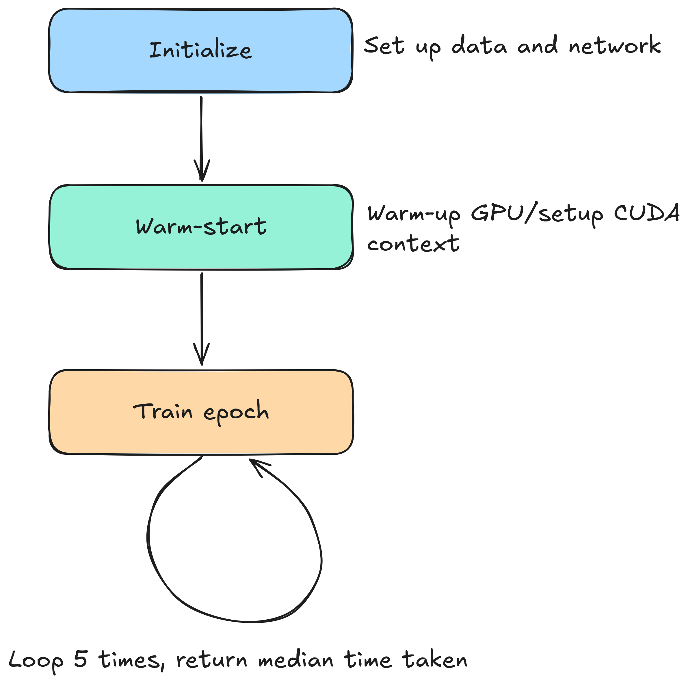
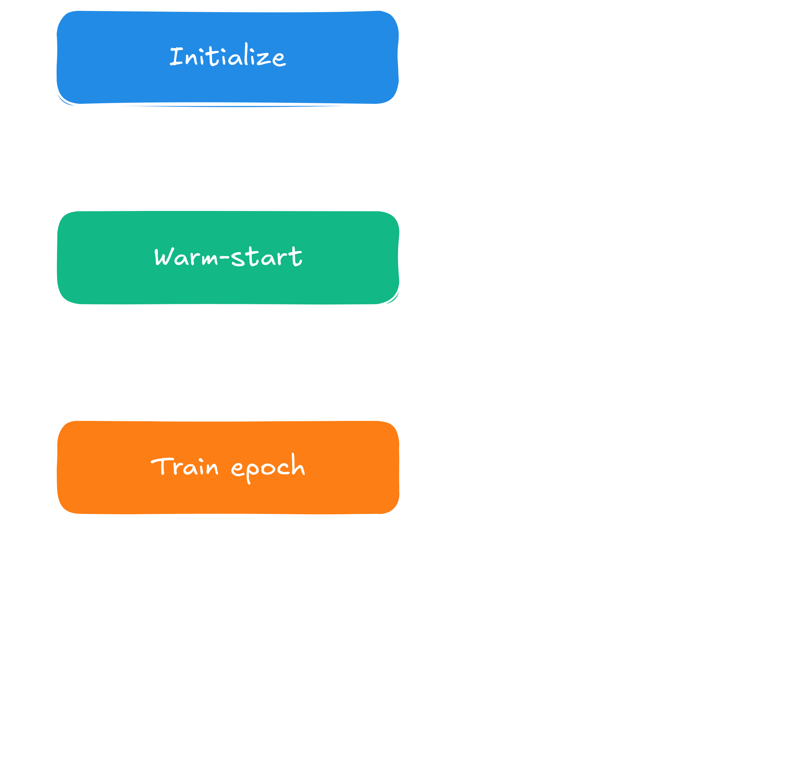
Brief disclaimer: There was an out-of-bounds indexing bug I found later in the createContiguousCopyKernel
in file tensor_ops.cu, and it has been phased out by optimization step 3. It
shows up rarely and thus had been undiscovered. If you follow along and your code crashes you can fix it by copying the version
at the end of the branch. However, the bug has no influence on the benchmarking and optimization results.
Optional: The benchmark in detail
For everyone interested I give a quick rundown on the benchmark. This will be a very quick one, as it is code
have seen mostly. In essence, it is the MNIST training loop we have already seen, but with a few modifications.
Let's look at the main loop:
# optimization/mnist_cuda.py
if __name__ == "__main__":
x, y_int = load_mnist()
y = to_one_hot(y_int)
x_train, x_val, y_train, y_val = train_test_split(
x, y, test_size=0.1, random_state=42
)
# upload once; all batching and shuffling happens on the GPU
x_train_gpu = to_gpu(x_train)
y_train_gpu = to_gpu(y_train)
x_val_gpu = to_gpu(x_val)
net = make_net()
loss_fn = CrossEntropyWithSoftmax()
optim = RmsProp(net.parameters(), 0.0001, 0.999)
# warm up GPU
BATCH_COUNT = 10
train_epoch(net, loss_fn, optim, x_train_gpu, y_train_gpu, max_batch_count=BATCH_COUNT)
times = []
n_epochs = 5
for epoch in range(n_epochs):
start = time.perf_counter()
train_loss = train_epoch(net, loss_fn, optim, x_train_gpu, y_train_gpu, max_batch_count=BATCH_COUNT)
elapsed = time.perf_counter() - start
print(f"Elapsed time GPU: {elapsed:.4f}s")
times.append(elapsed)
median_time = sorted(times)[len(times) // 2]
print(f"Median time GPU: {median_time:.4f}s")
At first we copy the whole dataset onto the GPU and create and initialize our network. This ensures that
we do not benchmark the initial Python overhead and the overhead that comes from setting up training (after
all we are interested in the training loop, not its one-off initialization). We then run one epoch before
we start benchmarking to initialize the CUDA context and warm-up the caches. Without this step the first
epoch is at a great disadvantage.
Next we define how many epochs and how many batches per epoch we want to benchmark. These numbers will
start low and increase over time, as our loop gets faster and more pleasant to benchmark on larger samples.
I also kicked out code that our benchmarking does not need, but that incurs penalties, such as printouts
and preceding status checks associated with them. The reduced training loop looks like this:
# optimization/mnist_cuda.py
def train_epoch(net, loss_fn, optim, x_gpu, y_gpu, batch_size=64, max_batch_count=50):
n = x_gpu.dims[0]
indices = list(range(n))
random.shuffle(indices)
x_shuf = x_gpu.slice(indices)
y_shuf = y_gpu.slice(indices)
total_loss = 0.0
n_batches = 0
max_batches = math.ceil(n / batch_size) # not used - my bad
for start in range(0, n, batch_size):
end = min(start + batch_size, n)
xb = x_shuf.slice(start, end)
yb = y_shuf.slice(start, end)
pred = net.forward(xb)
loss = loss_fn(yb, pred)
loss.backward()
optim.clipGradients(1.0)
optim.step()
optim.zeroGrad()
total_loss += loss.getitem(0)
n_batches += 1
if n_batches == max_batch_count:
return total_loss / n_batches
No surprises here, just a normal training loop. Lastly we benchmark through running this training
loop five times, and taking the time, and we record the median. I note here that initially in the
script I made a mistake of taking the last number that was put out. The numbers I give in this
blogpost in the initial steps are thus not the median, but the last output, but that should be ok,
as throughout this whole run of the benchmarks did not vary significantly in between the five training
loops. Rerunning will very likely give me the same numbers with minimal deviations.
Opt. 1 - Remove unnecessary memcopies
{% include pytorch-opt-summary.html
before="27.3880s" after="0.5023s"
speedup="54.53x" commit="a979eaf1c4f148c296cf13cd166bd2a6896d772b" %}
This example is benchmarked on a small example, because it was so slow to run. We will move on from that very quickly and
get to larger examples, but for now we benchmark on a mere 5 epochs with 10 batches each. The batch-size remains 64 samples
throughout this whole blog entry, as well as the next. We start off by running NSight to see the execution on a continuous timeline.
I note that because NSight significantly slows down the run and generates huge amounts of data then needs to load (sometimes
overwhelming itself) I ran NSight on a smaller example than the benchmark itself. A screenshot of this run is in the following:
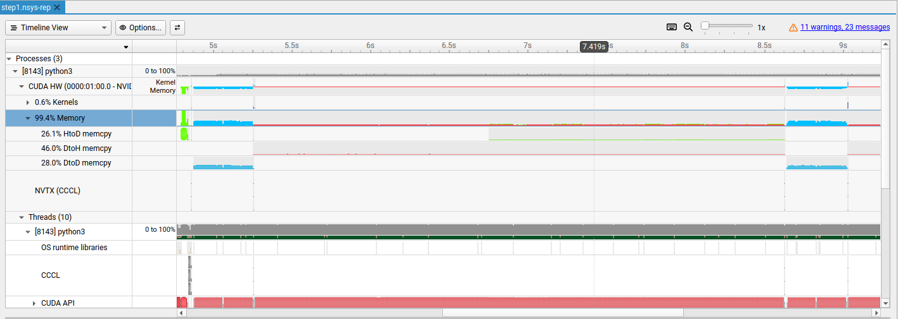
The main information is that rather embarrassingly, 99.4% of the time we spend copying data, with about half of that being
device-to-host copies. This kind of copy specifically should be negligible in this script, since we copy once from the host
to the device, and afterwards the only real copies back should just be the training losses and network outputs at best.
We can use NSight to go deeper into where the memcopy-calls are actually made and find that I forgot to map the gradient clipping
onto the GPU. That is, each time an optimizer clips the gradients the CPU would execute the associated parts of the code.
Additionally, since we copy each element individually through auto g = (*grads)[i]; and
grads->set((*grads)[i] * scale, i); we have created the worst possible way to copy to and from the device
as well. The fix then is straight forward: Write a kernel for gradient clipping and incorporate it into the CUDA framework.
I personally struggle with calling this an optimization step, since it is more of a debugging. The code did not do what I
expected it to do, and I diagnosed and fixed it. However, I already had my naive CUDA implementation as a release out there,
and this serves as a stark example of how expensive seemingly innocuous memcopies can wreck your application, so I kept it in.
The speedup is magnificent. In this example I used a reduced benchmark, but going to the final benchmark I used for my last
optimization steps, this step has reduced the runtime from 997.691s down to a meager 2.399s. Can't really complain about that.
Opt. 2 - Speed up slicing by using non-blocking CUDA kernel instead
{% include pytorch-opt-summary.html
before="0.7337s" after="0.1635s"
speedup="4.49x" commit="a68493d2faa74f2cf2cb1ee8b302f6b784126595" %}
For everyone looking at the before-after numbers and wondering about the contradiction with the optimization step before,
I have increased the workload for the benchmark now. More specifically, the number of batches we push through per epoch
has been increased from 10 to 50 now, making the before number larger than the after from the previous example.
To start out with the optimization, we once again employ NSight, giving us the following timeline:
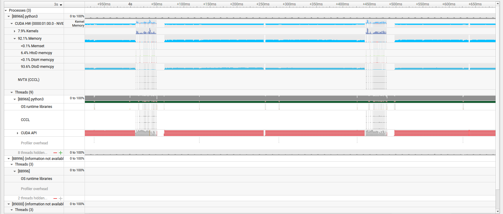
We find ourselves still copying a lot of data, but this time we spend the bulk of it on device-to-device copies.
The culprit this time is the slicing operation. Looking into the Python code we use slicing to implement the
shuffling operation at the beginning of each epoch. The code for that looks like this:
The slicing, at it stands before optimizing, looks like this:
// src/backend/data_modeling/tensor.cpp
Tensor Tensor::getSlice(span<const tensorDim_t> indices) const {
// .. set up result
values->copyValues(*res.values, indices, res.getDims().getStride(0));
return res;
}
void Tensor::tensorValues_t::copyValues(tensorValues_t& target, span<const tensorDim_t> indices,
const tensorSize_t sizeOfDim) const {
assert(target.size >= sizeOfDim * indices.size());
switch(device){
case Device::CPU:
// ...
case Device::CUDA:
#ifdef __CUDA
tensorSize_t targetOffset = 0;
for(tensorDim_t idx: indices){
tensorSize_t thisOffset = idx * sizeOfDim;
copyValues(target, thisOffset, thisOffset+sizeOfDim, targetOffset);
targetOffset += sizeOfDim;
}
cudaErrchk(cudaDeviceSynchronize());
#else // the casual check for any CUDA call
__throw_invalid_argument("Not compiled with CUDA");
#endif
break;
}
}
void Tensor::tensorValues_t::copyValues(tensorValues_t& target, tensorSize_t low,
tensorSize_t high, tensorSize_t targetOffset) const {
// safety checks here
switch(device){
case Device::CPU:
std::memcpy(target.values+targetOffset, values+low, (high-low) * sizeof(ftype));
break;
case Device::CUDA:
#ifdef __CUDA
cudaErrchk(cudaMemcpy(target.values+targetOffset, values+low, (high-low) * sizeof(ftype), cudaMemcpyDeviceToDevice));
#else
__throw_runtime_error("Not compiled with CUDA");
#endif
break;
}
}
The gist is the following: Initially, getSlice sets up the result, and the first copyValues-methods called
determines a range to copy from for each index to slice over. This for-loop then calls subsequent memcopies.
Pretty straight forward, but the astute reader can find two issues with this design.
The first problem is that memcopies are blocking. That is, if somewhere along the code I call a standard
cudaMemcpy, then the memcopy is issued on the host, and the host code blocks until all data is on the device -
there is an actual reason for this design I talk about optionally below. For now it is worth knowing that we
lose momentum by issuing a series of subsequent memcopies, each one waiting for the previous one to finish.
For better bus utilization we should focus on having less memcopies, but each one better transport a large
chunk of neighboring memory cells. I.e. we'd rather have large coalesced memory accesses than many smaller
ones where applicable.
The second problem is negligible compared with the first one, but still worth mentioning: We do have two
overloads of copyValues here, and each one checks the device. Given that the device does not change in between
the two we could just manually get the memcopies from the inner call into the outer call, saving a conditional
check. For now we will only fix the first one though, as this is where we lose the bulk, and the CUDA fix naturally
does away with this. What's left on the CPU side is work for later.
To fix this issue we have multiple ways. For instance, we could use multiple CUDA streams, hence overlap the
memcopies via overlapping the memcopies. The runtime overhead then lies in context creation for each stream,
plus the complexity we introduce in the source code itself.
There is however an easier solution that I chose instead. Since we already have a destination allocated on the GPU
we can bypass the memcopies entirely and simply write a quick manual kernel copying the data for us. The overhead here
is in thread creation, but once they exist each thread will do its own indexing, giving us both coalesced memory accesses
where applicable, it bypasses the additional stream initialization for now, and it gives us an easy way to synchronize,
since we can just launch it on the default stream asynchronously. The kernel is depicted below.
Ok, before I start going into the more interesting part of this the actual boring answer is "It's just the API design".
CUDA does support asynchronous memcopies, there's especially little problem with them when they happen inside the device.
However, what matters is also safety. Asynchronous programming is susceptible to all kinds of race conditions and subsequent
errors, hence the CUDA team decided to give guarantees on memcopies. Once the host moves to the next instruction the data
is guaranteed to be where you expect it to be.
There is however a subtle problem with asynchronous memcopies as well, and it has to do with how memory is managed on a
computer. This is a big can of worms that would burst the scope of this blogpost, but in short, computers manage memory
through virtual memory. That is, when you have a program using internal addresses, the operating system uses a multilevel
lookup table to map the program's internal addresses to the real, physical addresses. As a result of that we never have to
load the entire program into the memory. That is the reason why an 100GB large video game can fit into 16GB of RAM - it only
ever is partially there.
To enable that mechanism memory is always loaded in chunks of memory into RAM, and we call such a chunk a page. Pages are loaded
into memory dynamically: If the CPU requests a piece of data the operating system checks if it is already there (that's only half-true,
but it's enough to explain what is going on here). Data thus can also be ejected from RAM back into main memory, especially when RAM is
full. And that can easily happen if we run multiple programs.
Now imagine that we now have a tensor, and we want to copy its content onto the GPU. The host does not know about the internals of
the GPU, so we tell the GPU where the data remains that it wants, as well as where it wants it to be (the dst-pointer we give the
cudaMemcpy commands). The GPU starts to copy, but now the host moves on and frees the page again. In that moment the operating
system has free hands to kick out our page we are in the process of copying from, and replace it with another page, possibly
even from another program. Sounds terrible, no?
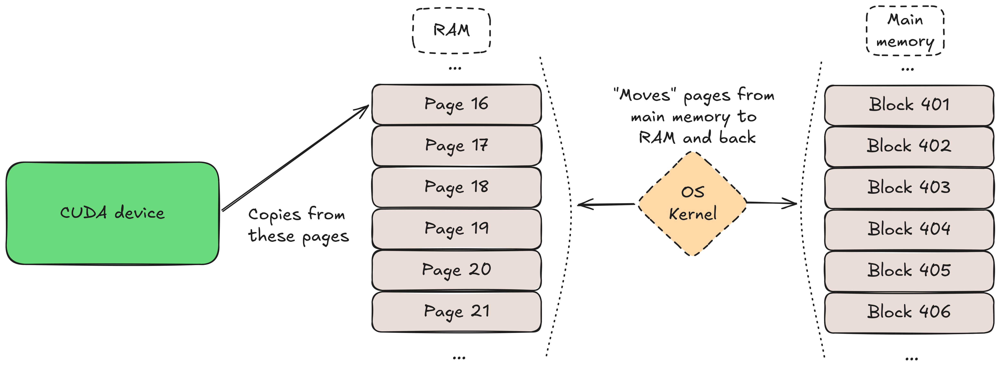
The paging mechanism outlined. The host code tells the CUDA device that it can copy a code segment, and the OS kernel manages
memory. The problem arises when the OS kernel swaps out pages back into main memory while the CUDA is still copying from them. This
is guaranteed to not happen if we block the host code, but if the memcopy-operation is performed asynchronously additional safety
features have to be used, such as 'pinned memory'.
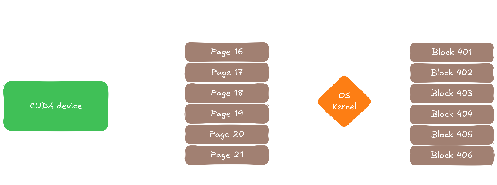
The paging mechanism outlined. The host code tells the CUDA device that it can copy a code segment, and the OS kernel manages
memory. The problem arises when the OS kernel swaps out pages back into main memory while the CUDA is still copying from them. This
is guaranteed to not happen if we block the host code, but if the memcopy-operation is performed asynchronously additional safety
features have to be used, such as 'pinned memory'.
The workaround is to use asynchronous memcopies if you want to use them, but they have a pre-condition for exactly that reason:
At first we have to tell the operating system that the chunk of memory we want to copy from cannot be swapped out. This is called
page locked memory, CUDA calls it pinned memory, and is subject for a later blogpost. For us here this is technically irrelevant,
since we copied device-to-device, but CUDA does not differentiate. I.e. it all boils down to the original reason: CUDA keeps you
safe from tripping over your own shoes, and if you want you can use the asynchronous method with a little bit of extra code.
Opt. 3 - Speed up matmul in the backward block through kernel fusion
{% include pytorch-opt-summary.html
before="0.1635s" after="0.0704s"
speedup="2.32x" commit="82ee6524d55606a1a188d7e9a3b452d8d1d0d677" %}
As per usual, we start by profiling through NSight. The following timeline shows that we finally moved into kernel space:
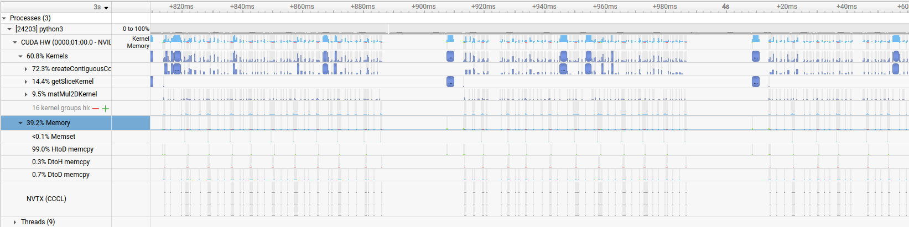
We find ourselves 60% of the time running kernels, and out of that more than 70% in the createContiguousCopyKernel. The question
is where this one gets called the most, but since this is a new kernel not explained yet I give an optional explanation below. If
you are familiar with it you can skip this section and move on to the next one.
Optional: Dimensionality revisited
In part one of this series I introduced a class representing the dimension of a tensor. I have silently refined that a little bit,
and if you are not familiar with strided dimensions this is for you. To recap on the previous design, I introduced a class Dimension,
and gave it an internal vector representing the dimensions. If you look at the transpose method as it was before, then you saw just
fixed hardcoded transposition.
The refactoring step has been circumventing that. We might not want to move data around every time we call transpose, so I made that
lazily. I gave the Dimension class two additional fields representing the logical layout, juxtaposed with the physical layout that
the previously introduced fields represent. The beginning of the class now looks like this:
// src/backend/data_modeling/dim_type.h
class Dimension final {
using dim_t = std::array<tensorSize_t, MAX_NDIMS>;
struct shallowCopyToken {};
private:
// those two indicate the structure of the contiguous data that lies underneath
std::shared_ptr< std::vector<tensorDim_t> > contiguousDims;
std::shared_ptr<dim_t> contiguousStrides;
std::vector<tensorDim_t> dims;
dim_t strides;
// ...
public:
// ...
bool inOriginalState() const noexcept {
return *contiguousStrides == strides;
}
const auto getStrides() const noexcept { return strides; }
const auto getContiguousStrides() const noexcept { return contiguousStrides; }
void makeContiguous();
// ...
}
I already made an initial step for a later optimization, replacing the std::vector containers with std::array ones. That will
require some Python-C++ translation and some refactoring here and there, but will likely also be a nice small little speedup,
moving data from the heap right into the stack where the code is.
More important now is the function of the logical representation. Essentially it boils down to lazy computation. Calling
transpose on a tensor now does not change the underlying data structure, but just the representation of strides. The
contiguousStrides represent the physical layout, and only when the tensor is requested to be made contiguous do we
move the data so to represent the view we created through our transpose earlier.
This design does two things for us:
We can create transposed views on tensors without moving data unnecessarily.
Some operations might not need the tensor to be contiguous to run efficiently - hence this design opens up future optimization vectors.
By digging deeper we find that the kernel is extensively called in the backward-pass of the matrix multiplication
operation. Looking at the node again we find the following operation:
I talked about this method earlier in part 2a in an optional
block, but if you allow me to quote myself, "Given two matrices $A$ and $B$, and computing their
matrix multiplication $C = A @ B$, we obtain the following for the derivatives:
$\frac{\partial C}{\partial A} = C @ B^T$ and $\frac{\partial C}{\partial B} = A @ C^T$". The code on the other side does
the following: It first transposes one of the two tensors, which induces a copy with a reshuffling of the underlying data,
then multiplies. But since we need the transposition how to solve that one?
Kernel fusion to the rescue: We need to do the transposition in any case, but what we can do is bake it directly
into our matrix multiplication, where we will have to think about our indexing so that we hit the right elements.
Luckily this is also rather straight forward, all we have to do is virtually swap rows and columns inside the kernel,
but the logic remains the same. To further avoid decision making at runtime we template our kernel, and the transposition
information will be evaluated at compile time, leaning on modern constexpr-features. The kernel looks like the following
after the refactor:
// src/backend/data_modeling/cuda/tensor_ops.cu
namespace {
__global__ void matMul2DKernel(ftype* const res,
const ftype* const left, const ftype* const right,
const tensorDim_t leftRows, const tensorDim_t rightRows,
const tensorDim_t leftCols, const tensorDim_t rightCols,
const tensorSize_t resSize)
{
const int tid = threadIdx.x;
const int gid = blockDim.x * blockIdx.x + tid;
if(gid >= resSize)
return;
const int K = transposeLeft ? leftRows : leftCols;
const int N = transposeRight ? rightRows : rightCols;
const int i = gid / N;
const int j = gid % N;
// C[i, j] = sum_{k=0}^{leftCols} A[i, k] * B[k, j]
ftype cij = 0;
for (int k = 0; k < K; k++) {
int leftIdx = transposeLeft ? k * leftCols + i : i * leftCols + k;
int rightIdx = transposeRight ? j * rightCols + k : k * rightCols + j;
cij += left[leftIdx] * right[rightIdx];
}
res[gid] = cij; // smem[tid];
}
}
Important to note here is that there's a decision to be made on whether the input parameters, i.e. the number of
rows and columns, represent the physical or the logical layout, with the physical being the actual alignment in
memory and the logical the alignment as it would virtually exist after transposing the respective tensor. I
preferred being lazy here and chose that they represent the physical layout, for no other reason as that being
easier for me to imagine and reason about.
The basic difference with the previous, unoptimized kernel is then the introduction of K and N, representing the
virtual layout then, and finally moving over that in the inner loop. The loop decides whether it wants to move over
rows or columns then, i.e. it does the index swap. All we have to do then is to update the call to matmul through
The signature for matmul has been adjusted to pass the flags down into the actual matmul implementation as in
Tensor matmul(const Tensor& other, const bool transposeLeft, const bool transposeRight) const;,
and the code decides dynamically which template instance of the kernel to call.
We will see this kernel again later and optimize it further, and then the same for the CPU later as well, so do not
feel obliged to dig into all the knitty-gritties of that one if you missed some detail. Getting the idea and why
this optimization step works is enough for now.
Opt. 4 - Memcopies revisited: On-device initialization and memory pool
{% include pytorch-opt-summary.html
before="0.9672s" after="0.8147s"
speedup="1.19x" commit="61c4dd534831df8853b3bc7bd40026b91943ab44" %}
This optimization step is certainly one of my favorite ones due to the simplicity and elegance of the solutions. Because
we are already in a really fast area, at least on this small dataset, we disabled the number of batches now, and an epoch
trains on the whole dataset from now on. However, since we are already very quick in general we will see more and more
negligible improvements only. Looking at NSight again we once find ourselves running lots of
memcopy-operations, shown below. So this is another chance for us to look at memory management.
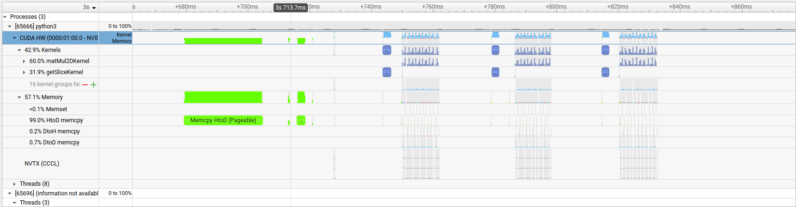
This step will, unlike the other ones, be split up in two parts. The first part
won't have an impact on the training dataset, but will alter the NSight output, as it will reduce those host-to-device copies.
The second one won't change the memcopies, hence not alter the NSight output, but it is something that has been burning under
my fingers for a while now, and now I finally have a chance to make it shine.
Opt. 4.1 - On-device initialization
This first part is pretty straight forward. When initializing weights for networks, so far the code went the following route:
First, it would allocate an array on the CPU, populate it with values, and then copy that whole chunk of memory onto the GPU.
This is happening in the constructor of the layer module we implemented earlier, as in
The fix is then to initialize the weights directly on the GPU. CUDA offers CuRand as a ready solution for that, so I won't go into detail here. The initializers in their final forms for
now can be found in the src/backend/shared directory.
Opt. 4.2 - Use a memory pool for tensors
With that done we finally find ourselves only doing necessary memcopies from host to device and back, set apart a few
not-so-obvious cases. For now we can consider that done though. However, there is another part of the code that I know
stings, and we're gonna take it down. Let's take a brief look at the construction and destruction of the tensorValues_t:
// src/backend/data_modeling/tensor.cpp
// note: I removed the CUDA safety checks here for legibility
Tensor::tensorValues_t::~tensorValues_t() noexcept {
switch(device){
case Device::CPU:
free(values);
break;
case Device::CUDA:
cudaErrchk(cudaFree(values));
break;
}
}
// called by Tensor-class constructor
void Tensor::tensorValues_t::resize(const tensorSize_t size) {
this->size = size;
switch (device) {
case Device::CPU:
values = static_cast<ftype*>(std::malloc(this->size * sizeof(ftype)));
break;
case Device::CUDA:
cudaErrchk(cudaMalloc((void**) &values, this->size * sizeof(ftype)));
break;
}
}
We see that both construction and destruction are fairly simple: They encounter a malloc for a new
tensor, and when it goes down, it frees that space again. The problem is that many of those allocations
and free-operations are unnecessary. Say we have a training loop. Then in each forward pass a chain of
tensors is constructed in the background. All these tensors have their lifetime limited to a maximum of a
forward-backward pass, and get destroyed and re-created during the next pass at the very maximum achievable
lifetime. Then, in the next forward pass we create tensors with exactly the same shapes and dimensions
all over again. And the same goes for the backward pass.
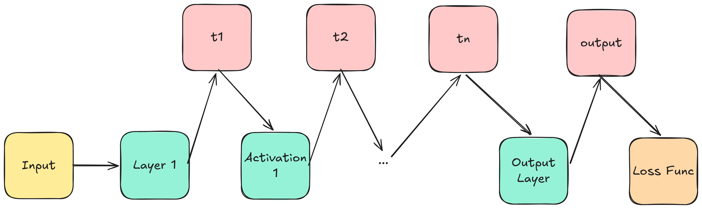
Illustration of allocations during forward pass. Every module that is part of the forward pass chain creates a new tensor (in
red in the top row), that gets destroyed at the end of the forward-backward pass cycle.
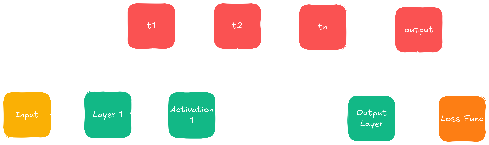
Illustration of allocations during forward pass. Every module that is part of the forward pass chain creates a new tensor (in
red in the top row), that gets destroyed at the end of the forward-backward pass cycle.
The problem with this is at hand. But so is the solution: This is an ideal case for a memory pool. Because sizes and dimensions are
the same in every forward- and backward pass, and when requesting memory we only really care about the full size of the tensor, we
can simply request and free based on the size. I give the memory pool with its main two functions in the following:
// src/backend/shared/memory_pool.h
// for legibility I removed the CUDA safety checks below
namespace mempool_impl {
template<typename T>
class MemoryPool final {
private:
// hold pointers to unused allocated memory.
std::unordered_map<tensorSize_t, std::vector<T*>> freeLists;
std::unordered_map<tensorSize_t, std::vector<T*>> freeListsCuda;
public:
MemoryPool() = default;
~MemoryPool() noexcept;
T* request(Device d, tensorSize_t n);
void giveback(T* ptr, Device d, tensorSize_t n);
void flush(Device d) noexcept;
};
template<typename T>
T* MemoryPool<T>::request(const Device d, const tensorSize_t n) {
switch(d) {
case Device::CPU:
{
// CPU version mirrors CUDA version
}
case Device::CUDA:
{
auto& list = freeListsCuda[n];
if(!list.empty()) {
T* ptr = list.back();
list.pop_back();
return ptr;
}
T* ptr;
auto err = cudaMalloc((void**) &ptr, n * sizeof(T));
if(err != cudaSuccess) {
// ran out of memory, free up cached memory and retry
flush(Device::CUDA);
cudaErrchk(cudaMalloc((void**) &ptr, n * sizeof(T)));
}
return ptr;
}
}
}
template<typename T>
void MemoryPool<T>::giveback(T* ptr, const Device d, const tensorSize_t n) {
switch(d) {
case Device::CPU:
freeLists[n].push_back(ptr);
break;
case Device::CUDA:
freeListsCuda[n].push_back(ptr);
break;
}
}
}
As we can see, we see... nothing much; well, not entirely true. I omitted a few methods in the snippet above, since they
should be obvious. The interesting one is request, and giveback does the inverse, which is much simpler.
Request essentially first checks for what device we request a memory allocation. The CPU version here is
commented away, because it mirrors the GPU version nearly one-by-one, just with different API calls.
After requesting the device we can then perform a (cuda-)malloc. If nothing comes back we ran out of memory,
in which case we have two choices. Either we let the program crash, or we decide to give up memory and continue.
The latter case gets the program running, but could do so very inefficiently, since we run the risk of recycling the
same memory all over again in a loop. I decided for the latter and went brute force for now, flushing the entire
reserved memory the pool holds. There are surely smoother ways out there, but that's again future work.
I also note that the template is not per se necessary. One could simply run one memory pool and demand the size
to allocate in bytes instead. That way the responsibility to request the right amount of size is pushed back
onto the programmer. This is almost purely a matter of taste, and I went with the simpler API, that in turn demands
that for other data types we need an extra pool. I have identified two pools so far, and I do not think that the
amount grows very much at all from this point on, so this is it for now. We then can instantiate the pool
via inline static mempool_impl::MemoryPool<ftype> tensorPool;, which introduces a rather subtle bug that
I fix in the next post. For now we can rewrite our earlier tensor-creation and destruction behavior as in the next
code segment and be done with this part of the optimization.
Opt. 5 - Fuse matmul kernels into a single kernel call
{% include pytorch-opt-summary.html
before="0.8147s" after="0.8159s"
speedup="1.0x" commit="1802666341d94d1727d870dcad772b23ba30b6d5" %}
This one is very interesting. Technically it should have improved things, but on the practical
side things stagnated. Before I get into that let's take a look at the nsys output. I increased the amount
of computation in the script we run to profile, therefore the amount of computation has heavily
lifted from the initial offloading of data onto the GPU and toward more computation. In other words,
we have a lot more computation now, and much less memcopies. We find ourselves with the following output:
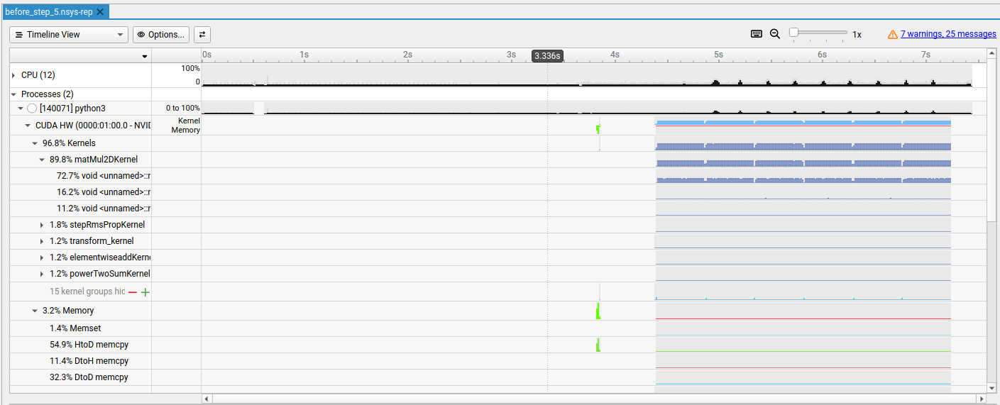
As can be seen here, the vast majority of the CUDA side is happening in the matmul-kernel, so that is the one
we are going to take a look at. On top of that, looking at the timeline as it happens, it is also clear why
our improvements are getting smaller and smaller. The spikes that are happening in the row of the kernel calls,
those are our training loop. Visually they occupy only roughly 30% of our entire timeline we are working on in
our benchmarks. Given how the rest of the code is already that large compared with that segment we can see how
fast we already are, since it is vastly outnumbered by a small series of Python calls surrounding everything in
the beginning and the end of the whole script.
Anyway, in a previous post we already laid hands on the matmul, introducing a templated kernel that overloads
in transposition of either the left or the right kernel. NSys now tells us that one of those is dominating all
the others, more clearly to be seen in the command-line via an nsys stat my_file.nsys-rep, parroting
back at us
Interestingly, the NSys-UI (NSight) and its command line output disagree on the real big kernels by a few percentage points, but
not on the overarching picture. The smaller kernels do fit well again. We take it as is and see that the majority of the
kernel space is used by the matmul templated overload transposing the right matrix, leaving the left one intact. That is the most
counterintuitive for us, since manually written we can create the best memory access pattern out of the box for that case.
Interesting is also that this one has the fastest execution in the best case, which is to be expected, but the worst in the worst
case.
Running NCU it tells us that this is due to partial waves, see the figure below. This means that at some point we run a wave of blocks
that keep some streaming multiprocessors (SMs) empty, hence wasting compute resources that sit idle. The fix would be to tune the number
of blocks, ideally in a way that they are a multiple of the SMs, and distribute the threads over them.
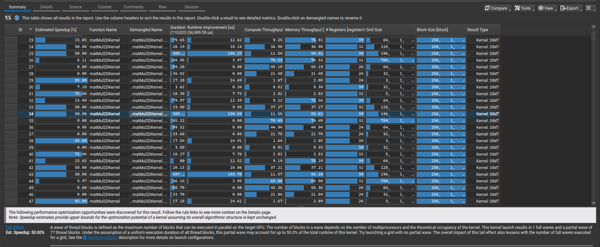
However, we don't always have to follow the profiler when we think there's a better way. I already hinted earlier that there are some
inefficiencies in the matmul-kernels, and before proceeding to what the compiler tells us we can do away with the obvious first.
Otherwise we start tuning a kernel that we will phase out anyway, and our work was for naught. To show the current problem again,
here's the kernel call.
As shown here, the host code separates the batch of matrices into segments of 2D-matrices, and then multiplies them individually
in a loop. We do not use CUDA streams here, meaning that instead of processing an entire batch of 2D-matrices in parallel, we
take each of them and multiply them in a sequential fashion. Needless to say that this design is horrible at best. Thus, in this step
we remove the outer while loop. Instead, we will use the CUDA utilities and use the additional y- and z- coordinates CUDA hands us for
indexing threads and blocks. First, we have to compute how many of those multiplications we aim to perform:
These will be our kernel call parameters. Next, we have to change our kernel itself to index into the right array. We give the
kernel itself the size parameters that we computed earlier, and we get the offsets inside the kernels through using the block-ids,
and we can then simply index inside the kernel.
const int leftOffset = blockIdx.y * leftSize;
const int rightOffset = blockIdx.y * rightSize;
// offsets computed outside of kernel before
cij += left[leftOffset + leftIdx] * right[rightOffset + rightIdx];
// same for indexing into result
This step clearly marks a trade-off. We had a series of sequential calls to the kernels, which we replaced by one single
kernel call. The kernel itself however became larger by adding more input arguments, but also slightly more computations. This
can have additional side effects, such as increasing register pressure, if they happened to be at the limit already. Asking NSys
and NCU however gives us a rather sobering answer: Our fix didn't seem to have any impact on anything at all. However, we also did
not regress and have some more elegant code in the end, so why not? For reference, below is the new NSys report before we move on to
fix 6.
{% include pytorch-opt-summary.html
before="TODO" after="TODO"
speedup="TODO" commit="5864fac242482783a92ca7599a54c6de5cbbf248" %}
Here I kick in the cheatcode a little, knowing that eventually in the matmul operation cache locality becomes the next hotspot. And we already
have that